Claude
- 5-hour and weekly limits, for all models or one
- Cloud credit, Console credit and extra usage
- Tokens, API cost, cache hits and model mix
- Session context, streak, peak hours and status
Needs Claude Code signed in with a Pro or Max plan.
Stream Deck plugin · version 4.0.0 · free and open source
One plugin, 33 keys, three services: Claude, Codex and Kimi Code. See what is left of each plan before you hit a limit, what your work would cost through the API, and whether the service is up.
Double-click the file to install. Stream Deck 6.9 or later, macOS 12+ or Windows 10+.


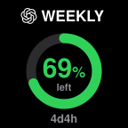
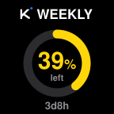
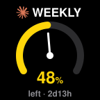
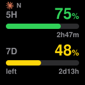
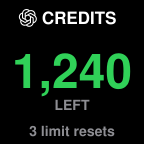
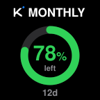
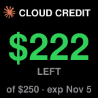
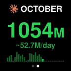
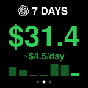
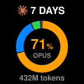
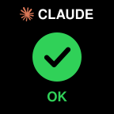
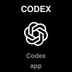
A key works as soon as its service is signed in on the same computer. Nothing is typed into the plugin, and you only need the services you use.
Needs Claude Code signed in with a Pro or Max plan.
Needs Codex, the app or the CLI, signed in with a ChatGPT account.
Needs The Kimi Code app signed in, or a Kimi Code API key stored for the plugin.
The All Services key puts Claude, Codex and Kimi side by side, each with its logo. Pick the weekly or the 5-hour limit as bars or rings, or both limits as numbers.
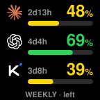
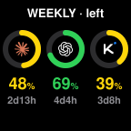
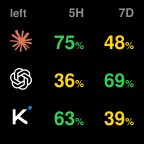
In Stream Deck's action list every key carries its service's name, such as Claude 5-Hour Limit or Codex Weekly Limit. A short press does what is listed here, and most of it can be changed in the key's settings. Holding a key for a moment refreshes it.
The 5-hour session limit: what's left or used, and the time until it resets.
Press switch left / usedHold refresh
The weekly limit for all models, or just Fable, Opus, Sonnet or Haiku.
Press switch left / usedHold refresh
The 5-hour and the weekly limit on one key.
Press switch left / usedHold refresh
Whether it's peak time now (weekdays 5–11 AM Pacific), and when it ends or starts, in your time zone.
Press next style
Dollars left of your plan's cloud session credit, and when it expires.
Press switch left / spentHold refresh
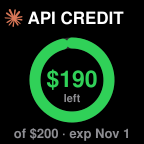
What's left of a Claude Console credit, such as $200 of promotional API credit, after your API spend.
Press switch left / spentHold refresh
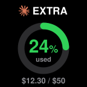
Extra usage spent this month, out of your monthly limit.
Press open the usage pageHold refresh
Claude Code tokens today, over 7 days or this month.
Press next periodHold rescan
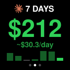
What that usage would cost at Anthropic's API list prices.
Press next periodHold rescan
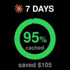
The share of input read from the prompt cache, and what it saved.
Press next periodHold rescan
The share of Fable, Opus, Sonnet and Haiku in your usage.
Press next periodHold rescan
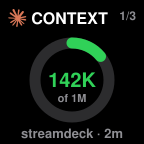
How full the context of your latest Claude Code sessions is.
Press next sessionHold rescan
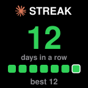
Days in a row with Claude Code, or the last five weeks as a calendar.
Press next styleHold rescan
Service status from status.claude.com, naming the model in trouble, such as DEGRADED · Fable 5.
Press open the incidentHold refresh
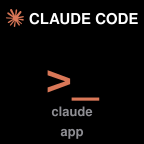
Opens a terminal running claude in a folder you choose, with any of your Claude accounts.
Press launch
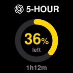
Codex's 5-hour limit on your ChatGPT plan. Says “not on your plan” where the plan only has a weekly one.
Press switch left / usedHold refresh
Codex's weekly limit.
Press switch left / usedHold refresh
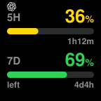
Both Codex limits on one key.
Press switch left / usedHold refresh
Credits bought on top of the plan, and the limit resets your account can spend.
Press open the usage pageHold refresh
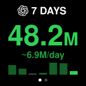
Codex tokens today, over 7 days or this month.
Press next periodHold rescan
What that usage would cost at OpenAI's API list prices.
Press next periodHold rescan
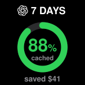
The share of input read from the prompt cache, and what it saved.
Press next periodHold rescan
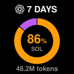
The share of each model family: Sol, Astra, Terra, Luna.
Press next periodHold rescan
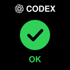
Codex's status from status.openai.com, or all of OpenAI, ChatGPT or the API.
Press open the incidentHold refresh
Opens the Codex app on a Mac, or a terminal running codex in a folder you choose.
Press launch
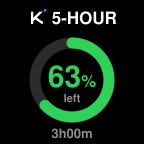
The 5-hour limit of your Kimi Code plan.
Press switch left / usedHold refresh
The weekly limit of your Kimi Code plan.
Press switch left / usedHold refresh
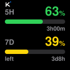
Both Kimi Code limits on one key.
Press switch left / usedHold refresh
The monthly limit of your Kimi plan, which Kimi Code shares with Kimi chat.
Press switch left / usedHold refresh
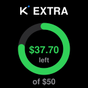
The wallet of extra usage on top of the plan: what is left, or this month's spend against the cap you set.
Press switch left / usedHold refresh
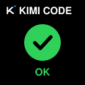
Kimi Code's status from status.moonshot.cn, or all of Moonshot AI or the API.
Press open the incidentHold refresh
Opens the Kimi Code app on a Mac, or a terminal running kimi in a folder you choose.
Press launch
Every limit key can show what's left or what's used, in any of ten styles. Colours go green, then yellow from 50% used, then red from 80%; both levels can be changed per key.
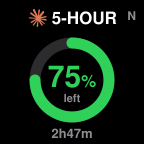
Ring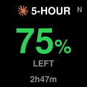
Number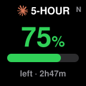
Bar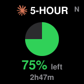
Pie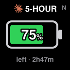
Battery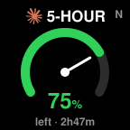
Gauge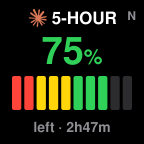
LED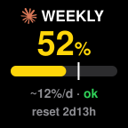
Pacehow fast you're using the limit against an even pace, and “limit in 1h12m” when it won't last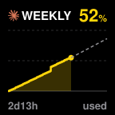
Historyyour usage over the current window, projected to the reset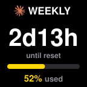
Reset timerthe countdown first, the percentage secondBoth Limits has 4 styles, All Services 3, Model Mix 3, and the credit keys eight. Every key shows the logo of its service before its label; Logo in the key's settings turns it off.
Click a key in the Stream Deck app to open its settings.
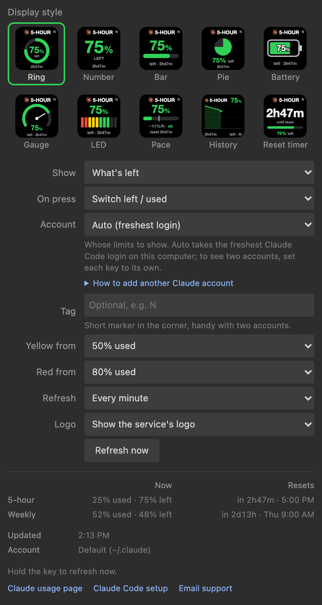
There are two kinds of numbers, and it helps to know which is which.
Limits, credits and extra usage come from the service itself. They include every computer you use and the service's own apps.
GET api.anthropic.com/api/oauth/usageThe same request as Claude Code's /usage command, with Claude Code's login.GET chatgpt.com/backend-api/wham/usageThe same request as the Codex app's usage panel, with Codex's ChatGPT login.GET api.kimi.com/coding/v1/usagesOr api.kimi.ai, whichever Kimi Code is set up with. The same request as the Kimi Code app, with a stored API key or the app's login.Tokens, API cost, cache hits, model mix, session context and streak come from the tool's own session logs. Neither Anthropic nor OpenAI publishes token counts per model for subscription accounts.
~/.claude/projects and any ~/.claude-* profile folders. Each response is counted once.~/.codex/sessions and ~/.codex/archived_sessions. Older logs that Codex has compressed can't be opened yet; the key's settings say how many.Download the file and double-click it. Stream Deck installs the plugin; later versions install the same way and keep your keys and their settings.
In Stream Deck's action list, open the AI Usage Meter category and drag the keys you want onto your Stream Deck. Click a key to choose its display style.
The plugin reads the login Claude Code keeps, in the macOS Keychain or in ~/.claude/.credentials.json. The first time, macOS may ask to allow it: choose Always Allow. If a key says login expired, run claude and send any message.
A second Claude account lives in its own profile folder:
CLAUDE_CONFIG_DIR=~/.claude-work claudeSign in there, then pick ~/.claude-work under Account in the key's settings.
Sign in with your ChatGPT account in the Codex app or with codex login. The plugin reads the login Codex keeps in ~/.codex/auth.json. It lasts about ten days and Codex renews it whenever it runs.
A Codex set up with an API key alone has no plan limits to show.
Best with a Kimi Code API key, which does not expire. Create one in the Kimi Code console and store it in the macOS Keychain; paste the key when asked:
security add-generic-password -a "$USER" -s "AI Usage Meter Kimi API Key" -wWithout a key, the plugin reads the login of the Kimi Code app. That one lasts 15 minutes and is renewed only while you use Kimi Code, so the keys go stale between your sessions.
Anthropic has no API for the Console credit balance, so this key takes your API spend since the credit was granted off the amount granted. Create an Admin key in the Claude Console and store it in the Keychain:
security add-generic-password -a "$USER" -s "AI Usage Meter Admin Key" -wThen enter the credit's amount and dates in the key's settings. An Admin key can administer your organization, so keep it in the Keychain; you can revoke it in the Console at any time.
AI Usage Meter has a new plugin identifier, so Stream Deck installs it next to the old plugin instead of over it. Add your keys once from the new category, then right-click the old plugin in Stream Deck's plugin list and choose Uninstall. An Admin key you stored under the old name is still found.
On Windows, keys are stored as files instead of in the Keychain. The README has every step for both systems.
A key never shows old numbers as if they were new. When something is wrong, it says what, and its settings say why.
The plugin is a reader. It never changes, refreshes, copies or logs a login.
No. Add the keys of the services you use. The All Services key shows the ones you tick under Services, and a key of a service that isn't set up simply says so.
Yes. AI Usage Meter is open source under the MIT license. There is no account, no subscription and nothing to pay for.
No. Everything runs on your computer. The plugin reads the logins your tools already keep, asks each service for your own numbers, and has no analytics, no telemetry and no server of its own.
That is the Kimi Code app's 15-minute login running out between your sessions. Store a Kimi Code API key for the plugin and the numbers stay current all the time.
Some ChatGPT plans give Codex a weekly limit only. Use the Weekly key; the key's settings tell you which limits your plan has.
Codex compresses its older session logs, and the plugin can't open those yet. The key's settings say how many logs were not read.
No, only this computer's logs. The limit keys do count everything: those numbers come from the service itself.
Yes, per key: Logo in its settings. The All Services key then shows two letters per service.
Every minute by default (Refresh in the settings); hold a key to update it now. Flipping between pages of your Stream Deck doesn't ask the services again.
The code is there and the tests cover it, but it hasn't been tried on a real PC yet. Reports are welcome.
It is the same plugin under a new name and a new identifier, so Stream Deck installs it next to the old one. Add your keys once from the AI Usage Meter category, then uninstall the old plugin.
Free, open source, and installed with a double click.